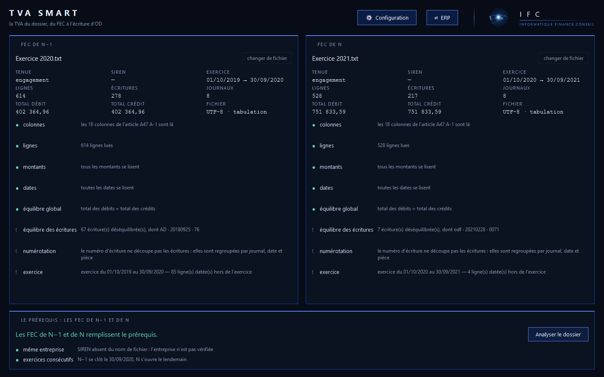
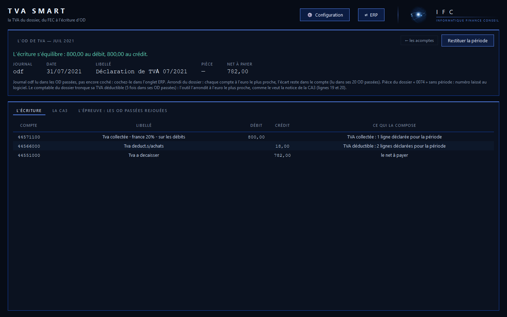

IFC
IFCTVA Smart. Deux FEC, il calcule. C’est tout.
Vous déposez le FEC de l’exercice et celui du précédent. TVA Smart calcule la TVA de la période, remplit la déclaration et rend l’écriture à importer. Aucune saisie : tout se lit dans les FEC.
- CA3 et CA12
- OD importable
- Chaque montant justifié
- Sur votre poste
En trois temps
Déposez les deux FEC
Le FEC de l’exercice en cours et celui de l’exercice précédent, glissés dans la fenêtre. Les deux sont indispensables : l’outil les lit et dit s’ils suffisent.

Il calcule
La période à déclarer, chaque ligne de TVA avec sa décision et son motif, puis l’écriture d’OD, équilibrée.

Vous récupérez la déclaration et l’écriture
La CA3 ou la CA12 remplie, l’OD au format de votre logiciel, et l’Excel qui justifie chaque montant.

Ce qu’il rend
Pour chaque période, un dossier « TVA Juillet 2026 » qui contient tout ce qu’il faut pour déclarer, passer l’écriture et justifier.
La CA3 ou la CA12
Le formulaire officiel millésimé (3310-CA3-SD, 3517-S-SD) rempli ligne par ligne, base et taxe à l’euro, avec ce qui compose chaque ligne.
L’OD de TVA
L’écriture de centralisation au format d’import de votre logiciel : 31 formats, de Sage à Cegid, EBP, ACD, Odoo… jusqu’à SAP et Dynamics.
Le classeur Excel
La TVA collectée et déductible ligne à ligne, chaque décision avec son motif, et le lettrage des comptes de TVA que l’OD solde.
Ce qui est à revoir
Les lettrages que le libellé des règlements contredit, les lignes qui traînent depuis plus de trois mois, ce que le FEC ne permet pas de trancher : dit, jamais deviné.
Comment il travaille
Les méthodes de calcul sont écrites, pas devinées. Les déclarations déjà passées par le comptable servent à reconnaître celle que le dossier applique.
Les FEC de l’exercice et du précédent
- La tenue du dossier : engagement ou trésorerie
- Le régime : réel normal mensuel ou trimestriel, réel simplifié
- L’exigibilité : encaissement, débits, autoliquidation
- Les acomptes, les avoirs, les notes de frais, les taxes assimilées
- Les OD de TVA déjà passées, et leurs règlements au Trésor
Sur votre poste
L’outil s’installe sous Windows et travaille en local. Vos FEC ne sont envoyés nulle part.
Tout se justifie
Chaque ligne déclarée ou reportée porte son motif et, quand il y en a un, le texte qui la fonde.
Il ne touche pas à vos journaux
Il produit des fichiers ; vous importez l’écriture sous votre responsabilité.
Pour un dossier tenu
TVA Smart calcule la TVA d’un dossier correctement tenu. Il ne remplace pas la révision : ce qu’il ne peut pas trancher, il le signale.
Prix et téléchargement
Les TPE, les PME et les cabinets qui tiennent leurs dossiers
- Windows 10 ou 11
- Les FEC de l’exercice en cours et de l’exercice précédent : sans le FEC de l’exercice précédent (premier exercice, création d’entreprise), l’outil ne calcule pas
- Un changement de date de clôture en cours d’exercice n’est pas pris en charge
- Une clé par déclaration, ou par dossier en abonnement
On paie la déclaration, jamais le mois
- À l’unité : 8 € HT, un dossier, une période ; la CA12 : 10 € HT
- En abonnement : 7 € HT par déclaration, prélevés au rythme du dossier (mois ou trimestre) ; la CA12 : 10 € HT par exercice
- Pack cabinet : 6 € HT par dossier et par déclaration, à partir de 10 dossiers
Une question avant d’acheter : aurelien.touchefeu@ifc-pro.fr · 07 82 78 91 49